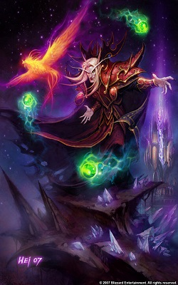
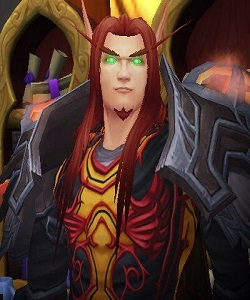
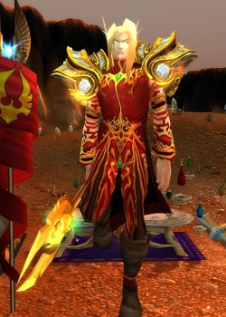
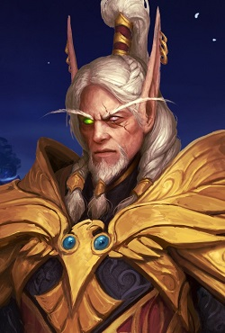
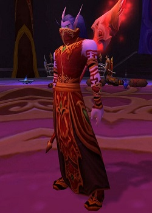
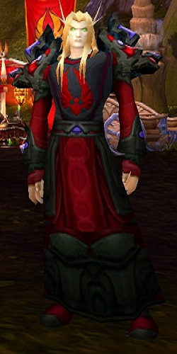
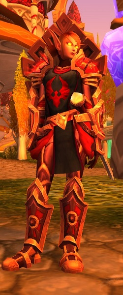
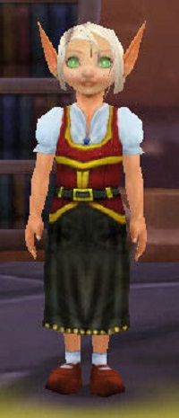

Эльфы крови или син'дорай на Талассийском («дети крови») - раса состоящая из высших эльфов, которые именовали себя эльфами крови в честь своих собратьев погибших при уничтожения армией Плети Кель'Таласа во время Третьей Войны. В дополнении The Burning Crusade, эльфы крови, оставшиеся в Азероте присоединились к Орде, стремясь воссоединиться с принцем Кель'тасом Солнечным Скитальцем в Запределье. С тех пор они объявили своей столицей Луносвет, город расположенный в Лесах Вечной Песни. Лор'темар Терон взял на себя командование в отсутствие Кель'таса. Позже, узнав истинную цель Кель'таса (призвать Кил’джедена в мир смертных), эльфы крови Луносвета отвергли принца-предателя. Лор’темар Терон, Халдарон Светлое Крыло и Верховный магистр Роммат стали руководить в Луносвете при отсутствии каких-либо официально назначенных лидеров.
Десять тысяч лет назад, во время царствования королевы ночных эльфов Азшары, существовало элитное религиозное течение магов известных как Высокорожденные. Они практиковали магию, черпая силы из Источника Вечности, что многие другие эльфы считали ересью. Горячо верные своей королеве и под ее руководством, Высокорожденные открыли несколько порталов которые впустили войска Пылающего Легиона, развязав Войну Древних. Через некоторое время после Великого Раскола, большинство выживших Высокорожденных были изгнаны из Калимдора и поселились на восточном континенте, основав королевство Кель'Талас. Они стали называться высшими эльфами. В этот период они создали Солнечный Колодец и неустанно бодрствовали. В конце концов их фиолетовая кожа приобрела бледно-розовый оттенок как у людей или дворфов. Во время Третьей Войны принц Артас повел свою армию Плети против высших эльфов, опустошив Кель'Талас и отравив Солнечный Колодец. Большинство из того, что осталось от Кель'Таласа было сожжено высшими эльфами в качестве попытки психологической победы над Плетью, чтобы дать шанс выжить немногим высшим эльфам оставшимся на Острове Солнечного Скитальца. Несмотря на их попытки, большинство населения высших эльфов было уничтожено во время этого конфликта. В память о павших собратьях, большинство оставшихся переименовали себя в эльфов крови или син'дорай и поклялись отомстить за свою расу.
По состоянию на события, которые последовали после "Burning Crusade", эльфы крови погрязли в муках постоянной борьбы: с одной стороны над ними давлело присутствие сил Плети в Смертхольме, а с другой продолжающиеся атаки троллей племени Амани, которые избрали своим оплотом руины и святилища Зул'Амана. В Призрачных землях, под руководством опытных командиров, молодые Син'Дорай отправились в рискованное предприятие с целью сорвать планы сил Плети. Все закончилось плачевно: в конце неравного боя, от рук Плети пал командир Дар'Кхан Дратир. Данные события позволили эльфам крови присоединиться к силам Орды.
Между тем, эльфы крови, которые остались в Луносвете начали искать путь к Темному Порталу в Запределье для того, чтобы вернуть пропавшего принца, который по общему убеждению должен был стать спасителем. Эти поиски Кель'таса привели к шокирующим открытиям: Кель'тас, движимый жаждой силы, разорвал союз с Иллиданом и присягнул на верность Кил'джедену и Пылающему Легиону, главным виновникам создания Плети, которая разрушила столь любимый эльфами крови Кель'Талас. Небольшая группа эльфов крови, которые первоначально вошли в Запределье с принцем, признали его предателем (кем он, собственно, и был), и, в свою очередь, предали его самого. Эта группа, известная как Провидцы, поклялись в верности А'далу и наару в священном городе Шаттрат, работая в сотрудничестве с ними (и даже с Алдорами, хотя больших соперников было трудно отыскать), чтобы свергнуть Кель'таса, а также его некогда союзников Иллидана и Леди Вайш. В конце концов, они бы все равно напали на крепость Келя в бывшем комплексе дренеев Крепость Бурь и предположительно победили бы его, но с гораздо большими потерями.
Солнечный колодец восстановлен
После битвы с Кил'Джеденом выяснилось, что силы Солнечного Колодца иссякли, потому что Анвина пожертвовала собой, чтобы изгнать Кил'Дженена обратно в Круговерть Пустоты. Вскоре прибыли пророк Велен и Леди Лиадрин. Велен поместил в колодец маленькую сверкающую "искру" М'ууру и сразу после этого из Колодца начал поступать огромный поток света. Велен сказал: "Со временем, свет и надежда возродятся и станут гораздо больше, чем сила этого источника... Может статься, они возродят и дух этого народа". В мануале по "Гневу Короля-Лича" говорится о восстановлении Солнечного Колодца, но в игре это никак не отражается до цепочки заданий Кель'Делара.
Дополнение Wrath of the Lich King
После того, как на Азерот напал Король-Лич , Альянс и Орда объединились, чтобы отразить его атаку и навсегда разобраться с ним. Однако, Король-Лич был не единственной проблемой - Малигос -Заклинатель решил уничтожить всех смертных магов, которые не являются союзниками синей стаи. Благодаря Этасу Похитителю Солнца и его фракции, Орда вошла в Даларан . Вместе с Альянсом они помогли Серебряному легиону создать Серебряный турнир и Серебряный Завет.
Между событиями Третьей войной и WoW эльфы крови ничем не отличались от высших эльфов , кроме одежды - они носили чёрный и красный цвета, чтобы не забывать о своих ужасающих потерях. Их лица, руки и плечи покрывают многочисленные руны или тату, отпугивающие демонов, отмечающие победу над врагами или просто для украшения - у высших эльфов такого не встретишь. Их причёски также противоречат нормам, принятым в обществе высших эльфов. Однако, когда эльф крови находится в каком-нибудь поселении Альянса, он скорее всего назовётся обычным высшим эльфом, чтобы избежать опасности. Син'дорай обладают такой же продолжительностью жизни, как высшие эльфы, и они также стареют. Неясно, когда именно они начинают подвергаться возрастным изменениям и сколько живут, но доподлинно известны те, кто в живую застал отделение высших эльфов от кал'дорай. Мужчины эльфов крови обычно обладают сильным, атлетичным телом с хорошо развитой мускулатурой. У них длинные остроконечные уши, остро развитые чувства и хорошее зрение в темноте. Женщины эльфов крови могут похвастаться тем же, хотя фигура у них обычно по-эльфийски стройная. По стандартам большинства смертных рас, эльфы крови, как и высшие эльфы, очень привлекательны. Изначально считалось, что эльфы крови и высшие эльфы - один биологический вид, обладающий лишь разной культурой, но не физиологией, однако в последнее время эльфы крови начали становиться отдельной расой благодаря тому, что потребляют много маны из осквернённых источников. Из-за этого, например, глаза у эльфов крови стали зелёными, горящими демоническим огнём. Кроме того, эльфы крови выглядят бледнее либо краснее своих собратьев-высших эльфов, а их волосы светлее. Это основные признаки начала их эволюции как отдельной расы. Считается, что со временем они станут также далеки от высших эльфов, как сатиры - от ночных.
В лоре их глаза описаны как зелёные, но в иных источниках встречаются другие описания: В "Ледяном Троне" глаза эльфов крови белого цвета и лишены зрачков - и в официальных артах, и в самой игре. Это может объясняться тем, что от начала употребления магии демонов до изменения цвета глаз на зелёный понадобилось какое-то время, это не был мгновенный переход. Однако, их глаза из голубых стали белыми как только они потеряли связь с Солнечным Колодцем. При этом, когда Валира Сангвинар поглотила магию трезубца Морской ведьмы-наги, её глаза мгновенно изменили цвет на фиолетовый, который был цветом магии трезубца. Леди Лиадрин - одна из эльфов крови с золотыми глазами В классическом World of Warcraft, у эльфов крови белые глаза со зрачками. В Трилогии Солнечного Колодца дано такое же описание. Возможно, зелёные глаза эльфов крови в World of Warcraft: The Burning Crusade - это просто добавка Blizzard, позволяющая отличить игрокам НИПы эльфов крови от НИПов высших эльфов, а возможно - просто ошибка. В дополнении Battle for Azeroth впервые появились эльфы крови с золотыми глазами - это влияние восстановленного Солнечного Колодца.
Эльфы крови носят багряно-красные одежды в знак своей пламенной преданности и в память о крови своих погибших собратьев в Кель'Таласе. Многие изучают магию огня и тайную магию, в противовес магии холода и воды, которые были развиты в их утраченном обществе ранее. Архитектура эльфов крови почти не отличается от той, что принадлежит высшим эльфам. Яркий образец её - бастион Аллерии. Строения эльфов крови украшены подвесными и левитирующими элементами, сложными узорами, растительными и животными орнаментами, колоннами - их стиль похож на Ар-Нуво. Фонтаны у эльфов крови, кажется, опровергают все законы физики, ведь вода в них изливается в самых невообразимых направлениях. На знамёнах эльфов крови часто можно увидеть феникса . В Третьей Войне, чародеи крови обладали способностью призывать этих созданий. Между фениксами и эльфами крови существует глубокая связь - возможно, из-за общей разрушительной природы, возможно- из-за магической сущности, но в любом случае, у эльфов крови есть возможность контролировать их. Как феникс погибает и возрождается вновь, так и этот народ в какой-то степени "умер" как высшие эльфы и возродился вновь как эльфы крови. Эльфы крови говорят на талассийском и общем языках. Общий язык они выучили от своих союзников. В WoW эльфы крови говорят на талассийском и орочьем.
После разрушения от рук Артаса и Плети Солнечного колодца у эльфов крови вновь обострилась жажда магии. Эта зависимость пребывала с ними постоянно, с самого разрушения Источника Вечности , но теперь стала сильнее, чем когда-либо. Эльфы крови днями на пролёт страдают от слабости, и либо ищут хоть какой-нибудь источник магии, чтобы утолить её, либо пытаются этой жажде противостоять. Из-за своей зависимости, эльфы крови должна ежедневно по утрам посвящать один час медитации, во время которой они игнорируют и отстраняются от всех раздражителей внешнего мира. Также этот народ обучился справляться с жаждой, питаясь энергией скверны. Если эльф крови напитался энергией демона, жажда магии в нём утихнет на несколько дней. Хоть эльфы крови и не стесняются потреблять арканную энергию напрямую, они стараются держать своё увлечение магией под контролем, развивая свои способности и поддерживая самодисциплину. Те, кто этот контроль теряет, превращаются в Презренных, постепенно теряют рассудок, и порча овладевает ими всё сильнее.
Эльфам крови доступны следующие классы:
- Воин
- Разбойник
- Охотник
- Паладин
- Жрец
- Рыцарь смерти
- Маг
- Чернокнижник
- Монах
- Охотник на демонов
Классы магов, охотников и паладинов представлены внутриполитическими фракциями эльфов крови - Магистры, Странники и Рыцари Крови соответственно. Охотники на демонов также являются Иллидари.
Знаменитые эльфы крови
(для получения дополнительной информации наведите курсор на изображение)
- Кель'тас Солнечный Скиталец
- Этас Похититель Солнца
- Тей'телан Кровавый Взор
- Лорд-Регент Лор'темар Терон
- Верховный Магистр Роммат
- Магистр Асталор Кровавая Клятва
- Леди Лиадрин
- Саландрия